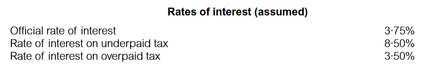
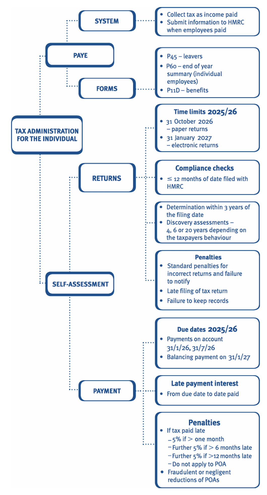

Chapter 12: Tax administration for individuals
- explain and apply the features of the self-assessment system as it applies to individuals.
- recognise the time limits that apply to the filing of returns and the making of claims.
- recognise the due dates for the payment of tax under the self-assessment system, and compute payments on account and balancing payments/repayments for individuals.
- list the information and records that taxpayers need to retain for tax purposes.
- explain the circumstances in which HM Revenue & Customs can make a compliance check into a self-assessment tax return.
- explain the procedures for dealing with appeals and First and Upper Tier Tribunals.
- calculate late payment interest and state the penalties that can be charged
- explain the PAYE system, how benefits can be payrolled, and the purpose of form P11D.
- recognise the circumstances in which real time reporting late filing penalties will be imposed on an employer and the amount of penalty which is charged.
1 Personal tax administration
The collection of income tax Employees have their income tax and national insurance contribution (NIC) liabilities on their employment income, and in some cases on small amounts of other income, collected at source through the PAYE system.
Self-assessment is the system for the collection of tax, which is not deducted through the PAYE system.
Therefore, employees with more complicated tax affairs and other taxpayers (e.g. the self-employed) will normally be required to submit details of their taxable income and gains annually in a tax return, so that their tax liability can be calculated and collected through the self-assessment system.
1.1 Self-assessment
Under the self-assessment system for individuals, taxpayers are responsible for providing the information to calculate the tax liability on the income tax return:
- The taxpayer will be sent a notice to complete a self-assessment tax return annually. A return must be completed and filed – either on paper or online.
- Different deadlines exist for filing paper and electronic (online) returns.
- The tax return covers income tax and class 4 NICs and capital gains tax (CGT) liabilities for the tax year.
- Payment of the tax must be made by 31 January following the end of the tax year to which it relates.
- Interim payments on account in respect of income tax and class 4 NIC may be required on 31 January in the tax year and 31 July following the tax year for certain taxpayers.
1.1.1 Return – filing deadline
The deadline for submitting the tax year 2025/26 self-assessment tax return depends on how the return is filed.
The deadline for submitting the return is:
- 31 October 2026 for a paper return
- 31 January 2027 for an electronic (online) return
- or if later, three months after HM Revenue & Customs (HMRC) issue a formal notice requiring completion of a 2025/26 tax return.
The 31 January following the end of the tax year is known as the ‘filing date’, regardless of whether the return is filed on paper or electronically.
This must be distinguished from the date on which the return is actually filed/submitted, which is the ‘actual filing date’.
Content of tax return
The taxpayer completes the main tax return form (SA100) to give basic details including the taxpayer’s name, address and certain types of investment income.
The taxpayer should then complete relevant supplementary pages to tell HMRC about all the taxpayer’s income and gains relating to the tax year.
For example, income from employment, income from property, or capital gains.
If the taxpayer is completing the tax return online, the supplementary pages can be added online as necessary.
If the taxpayer is completing a paper tax return, the supplementary pages that are needed should be requested at the same time as the main paper tax return.
Self-employed people: Should complete the self-employment supplementary pages.
Employees: Generally pay their tax liability under PAYE, and often a self-assessment tax return will not be required, as there is no further tax liability. However, if they receive other taxable income that is not fully taxed through the PAYE system, they will need to complete a tax return.
Partnerships: Although partners are dealt with individually, a partnership return is required to aid self-assessment for the individual partners. This gives details of the partners, includes a partnership statement detailing the partnership’s tax adjusted trading profit, and shows how this tax adjusted profit is allocated among the partners.
1.1.2 Return – calculation of tax
Where a return is filed electronically:–
a calculation of the tax liability is automatically provided as part of the online filing process.
Where a paper return is submitted:–
HMRC will calculate the tax liability on behalf of the taxpayer, provided the return is submitted by the 31 October deadline. The taxpayer also has the option of calculating the tax instead of HMRC.
the calculation by HMRC is treated as a self-assessment on behalf of the taxpayer. Where HMRC calculates the tax, it makes no judgement of the accuracy of the figures included in the return, but merely calculates the tax liability based on the information submitted.
HMRC normally communicates with the taxpayer by issuing a statement of account, which is a reminder of amounts owing to HMRC.
Statement of account
The statement of account sets out:
- the tax charges
- any charges of interest or penalties
- any payments already made by the taxpayer.
Amendments to the return
Either party may amend the return:
- HMRC may correct any obvious errors or mistakes within nine months of the date that the return is filed with them.
These would include arithmetical errors or errors of principle. However, this does not mean that HMRC has necessarily accepted the return as accurate. - The taxpayer can amend the return within 12 months of the 31 January filing date. For the tax year 2025/26, amendments must therefore be made by 31 January 2028.
Note that the amendment deadline is the same regardless of whether the return was filed on paper or electronically. If an error is discovered at a later date then the taxpayer can make a claim for overpayment relief to recover any tax overpaid.
Notification of chargeability
Self-assessment places the responsibility on the taxpayer to notify HMRC of all taxable income, therefore:
- Taxpayers who do not receive a notice to file a return are required to notify HMRC if they have income or chargeable gains on which tax is due.
- The time limit for notifying HMRC of chargeability is six months from the end of the tax year in which the liability arises (i.e. 5 October 2026 for the tax year 2025/26).
- Notification is not necessary if there is no actual tax liability. For example, if the income or capital gain is covered by allowances or exemptions.
- A standard penalty may arise for failure to notify chargeability.
Penalty for failure to submit a return
HMRC can impose fixed penalties and tax-geared penalties for the failure to submit a return, depending on the length of the delay.
Determination of tax due if no return is filed
Where a self-assessment tax return is not filed by the filing date, HMRC may determine the amount of tax due. The impact of this is:
- The determination is treated as a self-assessment by the taxpayer.
- The determination can only be replaced by the actual self-assessment when it is submitted by the taxpayer (i.e. the submission of a tax return).
- There is no appeal against a determination, which therefore encourages the taxpayer to displace it with the actual self-assessment.
A determination can be made at any time within three years of the filing date (i.e. by 31 January 2030 for 2025/26 tax return).
1.2 Records
Taxpayers are required to keep and preserve records necessary to make a correct and complete return.
1.2.1 Business Taxpayer
For a business (including the letting of property), the records that must be kept include:
- all receipts and expenses
- all goods purchased and sold
- all supporting documents relating to the transactions of the business, such as accounts, books, contracts, vouchers and receipts.
These taxpayers (i.e. the self-employed), must keep all their records (not just those relating to the business) until five years after the 31 January filing date.
For the tax year 2025/26 records must therefore be retained until 31 January 2032.
1.2.2 Other taxpayers
Other taxpayers are likely to have fewer records, but should keep evidence of income received such as dividend vouchers, P60s, copies of P11Ds and bank statements.
The records for these taxpayers must be retained until the later of:
- 12 months after the 31 January filing date (31 January 2028 for the tax year 2025/26)
- the date on which a compliance check into the return is completed
- the date on which it becomes impossible for a compliance check to be started.
1.2.3 Penalty for not keeping records
A penalty may be charged for failure to keep or retain adequate records. The maximum penalty is only likely to be imposed in the most serious cases, such as where a taxpayer deliberately destroys records in order to obstruct an HMRC compliance check.
2 Payment of tax
A taxpayer is required to settle liabilities by 31 January following the end of the tax year for:
- income tax
- class 4 NICs
- capital gains tax (CGT).
For the tax year 2025/26 this is by 31 January 2027.
Payments on account
For certain taxpayers, payments on account (POAs) may also be required.
If the taxpayer had an income tax liability in the previous tax year in excess of any tax deducted at source, POAs are normally required for the following year.
The exceptions to this are if:
- the total tax liability (i.e. income tax plus class 4 NIC) less PAYE for the previous tax year is less than £1,000, or
- 80% or more of the total tax liability (i.e. income tax plus class 4 NICs) for the previous tax year was met by deduction of tax at source.
The impact of these provisions is that most employed people will not have to make POAs, since more than 80% of their tax liability is usually paid through PAYE.
Due dates
For those taxpayers who are required to make POAs, the payment dates for the tax year 2025/26 are:
- first POA – 31 January 2026
- second POA – 31 July 2026 Any remaining liability is then settled on the balancing payment date – 31 January 2027.
Self-assessment POAs are only required for:
- income tax, and
- class 4 NICs.
Therefore calculation of POAs should not include any amounts in respect of CGT.
There is a separate CGT payment on account obligation – Chapter 17.
Calculation of POAs
POAs are calculated using the previous tax year’s ‘relevant amount’. Therefore the POAs for the tax year 2025/26 are based on the ‘relevant amount’ for the tax year 2024/25.
The ‘relevant amount’ is calculated as:
| £ | |
|---|---|
| Total tax liability for the year (income tax and class 4 NICs) | X |
| Less: PAYE | (X) |
| Relevant amount | X |
No POAs are required if there is no ‘relevant amount’ in the previous year. Therefore, for example, a taxpayer who starts self-employment on 1 May 2025 will not have to make POAs for the tax year 2025/26, since there will not be a ‘relevant amount’ for the tax year 2024/25.
2.0.0.1 Example 1: POAs
Roderick is required to make payments on account of his tax liability for the tax year 2025/26. His income tax liability for the tax year 2024/25 was £5,100. Of this, £1,250 was collected via PAYE.
Calculate Roderick’s POAs for the tax year 2025/26.
Solution
The relevant amount for the previous year is £3,850 (£5,100 – £1,250).
As this exceeds £1,000 and exceeds 20% of the total tax liability (20% × £5,100 = £1,020), POAs are required.
The amounts payable as POAs are based on an equal division of the ‘relevant amount’ for the previous year, hence (£3,850 × 1/2) = £1,925.
Roderick is required to make two POAs of £1,925 on 31 January 2026 and 31 July 2026.
2.0.0.2 Example 2: POAs
Ahmed’s tax liability for the tax year 2024/25 was as follows:
| £ | |
|---|---|
| Income tax | 9,400 |
| Less: PAYE | (2,100) |
| 7,300 | |
| Class 4 NIC | 700 |
| CGT | 3,342 |
| Total tax liability | 11,342 |
Calculate Ahmed’s POAs for the tax year 2025/26.
Solution
Claims to reduce POAs
- A taxpayer can claim to reduce POAs, at any time before 31 January following the tax year, if the taxpayer expects the actual income tax and class 4 NIC liability (net of PAYE) for the tax year 2025/26 to be lower than the tax year 2024/25. - The claim must state the grounds for making the claim.
Following a claim:
- The POAs will be reduced.
- Each POA will be for half the reduced amount, unless the taxpayer claims that there is no tax liability at all.
- If POAs based on the prior year figures are paid before the claim, then HMRC will refund the overpayment.
Incorrect claims to reduce POAs
A taxpayer should only claim to reduce POAs if the tax liability (net of PAYE) for the current year is expected to be less than the POAs based on the previous year’s ‘relevant amount’.
In the event that the claim is incorrect and the actual tax liability for the current year turns out to be higher than the reduced POAs, then the following consequences arise:
- Interest will be charged on the tax underpaid.
- A penalty may be charged if a taxpayer fraudulently or negligently claims to reduce POAs. Refer to
- A penalty will not be sought in cases of innocent error. The aim is to penalise taxpayers who claim large reductions in payments on account without any foundation to the claim.
Balancing payments
The balancing payment is due on 31 January following the tax year.
For the tax year 2025/26 this is 31 January 2027.
The balancing payment is calculated as:
| £ | |
|---|---|
| Total tax liability for the year (Income tax, class 4 NICs and CGT) |
X |
| Less: PAYE | (X) |
| Less: POAs | X |
| Balancing payment | X |
It is possible that a balancing repayment will be due, in which case HMRC will repay the amount of tax overpaid.
Where the amount of tax due changes as a result of an amendment to the self-assessment (by either the taxpayer or HMRC), any additional tax due must be paid within 30 days of the notice of amendment if this is later than the normal due date.
2.0.0.3 Example 3: POAs
Continuing the example of Roderick from Example 1: POAs, you now learn that his final liability for the tax year 2025/26 is £7,629. Of this amount, £1,635 has been collected via the PAYE system.
State the total amount payable by Roderick on 31 January 2027 and what the payment relates to.
Solution
The payment made on 31 January 2027 will comprise two parts:
- the balancing payment for the tax year 2025/26
- the first POA for the tax year 2026/27.
The balancing payment for the tax year 2025/26 is based on the final liability for the tax year 2025/26 less PAYE and the POAs already made.
| £ | |
|---|---|
| Tax liability (Income tax, class 4 NICs & CGT) | 7,629 |
| Less: PAYE | (1,635) |
| Less: POAs | (3,850) |
| Balancing payment | 2,144 |
The first POA for 2026/27 will be 50% of the ‘relevant amount’ for 2025/26.
| £ | |
|---|---|
| Tax liability (Income tax, class 4 NICs & CGT) | 7,629 |
| Less: PAYE | (1,635) |
| Relevant Amount | 5,994 |
The first POA is (£5,994 × 1/2) = £2,997
Summary
| £ | |
|---|---|
| Balancing payment | 2,144 |
| First POA – 2026/27 | 2,997 |
| Total payable by 31 January 2027 | 5,141 |
2.0.0.4 Example 4:
Emery’s tax payable for the tax year 2025/26 is as follows:
| £ | |
|---|---|
| Income tax | 10,800 |
| Less: PAYE | (2,500) |
| 8,300 | |
| Class 4 NIC | 800 |
| CGT | 4,442 |
| Total tax liability | 13,542 |
They made POAs of £8,000 in respect of the tax year 2025/26.
Identify the balancing payment due for the tax year 2025/26, the first POA for the tax year 2026/27 and state the payment date for both.
Solution
3 Interest and penalties
There are two types of interest:
- Late payment interest –
- Repayment interest
Late payment interest – calculated at 8.5% p.a.
Repayment interest – calculated at 3.5% p.a.
The late payment and repayment interest rates are included in the tax rates and allowances provided to you in the examination.

Late payment interest is automatically charged if any tax is paid late.
Interest can arise in respect of:
- payments on account
- balancing payments
- any tax payable following an amendment to a self-assessment
- any tax payable following a discovery assessment.
All interest is charged on a daily basis:
- from: the date the tax was due to be paid
- to: the date of payment.
In the examination calculations are performed to the nearest month and £ unless indicated otherwise in the question.
3.0.0.1 Example 1: Interest
A taxpayer pays POAs for the tax year 2025/26 on 31 March 2026 and 31 August 2026. The balancing payment is paid on 30 April 2027.
Identify the payments on which interest will be charged and state the period for which interest will be charged.
Solution
Interest will be charged as follows:
- first POA: from 1 February 2026 to 31 March 2026 – 2 months
- second POA: from 1 August 2026 to 31 August 2026 – 1 month
- balancing payment: from 1 February 2027 to 30 April 2027 – 3 months.
3.0.0.2 Example 2: Interest
Rodney was due to make the following payments of tax for the tax year 2025/26.
| Due Date | Payment | Actual date of payment |
|---|---|---|
| 31 January 2026 | £2,100 | 28 February 2026 |
| 31 July 2026 | £2,100 | 31 August 2026 |
| 31 January 2027 | £1,500 | 31 March 2027 |
Identify the periods for which interest will be charged.
Calculate, to the nearest month and pound, the amount of interest payable.
Solution
Interest on incorrect claims to reduce POAs
Interest is charged where an excessive claim is made to reduce POAs.
The charge is based on the difference between the amounts actually paid and the amounts that should have been paid.
The amount that should have been paid is the lower of: – the original POAs based on the ‘relevant amount’ for the previous tax year – 50% of the final tax liability (excluding CGT, net of PAYE) for the current tax year.
3.0.0.3 Example 3: Interest
A taxpayer’s relevant amount for the tax year 2024/25 is £5,000 (POAs for the tax year 2025/26 are therefore £2,500), but a claim is made to reduce the POAs to £1,000 each. These payments are made on time.
Subsequently the taxpayer calculates the actual tax liability (net of PAYE) for the tax year 2025/26 to be £4,500. The correct balancing payment (i.e. £4,500 – £2,000 = £2,500) is paid on 31 January 2027.
Identify the amounts on which interest will be charged and state the period(s) for which interest will be charged.
Solution
POAs should have been reduced to £2,250 (£4,500 × 1/2) rather than £1,000. Interest will therefore be charged as follows:
- on £1,250 from 1 February 2026 to 31 January 2027
- on £1,250 from 1 August 2026 to 31 January 2027
3.0.0.4 Example 4: Interest
Helena’s POAs for the tax year 2025/26 based on her income tax liability for the tax year 2024/25 were £4,500 each. However, Helena made a claim to reduce these amounts to £3,500.
She made her POAs for the tax year 2025/26 as follows:
| Payment | £ | Date |
|---|---|---|
| First POA | 3,500 | 29 January 2026 |
| Second POA | 3,500 | 31 August 2026 |
Helena’s actual liability for the tax year 2025/26 was as follows:
| £ | |
|---|---|
| Income tax liability (net of PAYE) | £10,000 |
| Capital gains tax | £2,500 |
Helena paid the balance of the tax due £5,500 on 28 February 2027.
Identify the amounts on which interest will be charged and state the period(s) for which interest will be charged.
Solution
POAs should not have been reduced as Helena’s tax liability for the tax year 2025/26 (£10,000) is greater than the relevant amount for the tax year 2024/25 (£9,000). Therefore the amount that should have been paid, on each of the due dates was £4,500.
First POA: £3,500 is paid on time.
Interest charge therefore only levied on £1,000 that should also have been paid.
Levied for the period 1 February 2026 to 28 February 2027.
Second POA: £3,500, as well as being the wrong amount, was also paid late.
On £3,500, interest charged 1 August 2026 to 31 August 2026.
On the additional £1,000 not paid, interest levied for the period 1 August 2026 to 28 February 2027.
On balancing payment:
Income tax of £9,000 (£4,500 × 2) has been dealt with above, so it is only the remaining £1,000 that will incur an interest charge, from 1 February 2027 to 28 February 2027.
Capital gains tax of £2,500 incurs interest from 1 February 2027 to 28 February 2027.
3.1 Repayment interest
Interest may be paid by HMRC on any overpayment of tax. If applicable, interest runs: - from: the later of: - the date the tax was due, or - the date HMRC actually received the tax - to: the date of repayment.
Where interest is paid, it is only paid on the amount of tax that should have been paid (i.e. deliberate overpayments do not attract interest).
3.2 Penalties for late payments
Late payment interest is not a penalty, since it merely aims to compensate HMRC for the advantage of the taxpayer paying late.
Therefore, to further encourage payment of tax by the due date, penalties can also be imposed by HMRC where income tax, class 4 NIC or CGT is paid late.
Penalties do not apply to POAs.
Penalties are calculated as follows:
| Tax paid (Note) | Penalty (% of tax due) |
|---|---|
| More than 1 month late | 5% |
| More than 6 months late | Additional 5% |
| More than 12 months late | Additional 5% |
3.2.0.1 Example 1: Interest and penalties
A taxpayer’s balancing payment due for the tax year 2025/26 is £5,000.
Only £1,200 of this was paid on 31 January 2027.
Set out the interest and penalties that will be payable and state the implication of continued non-payment of the liability.
Solution
Interest
Interest will be charged on £3,800 from 1 February 2027 to the date of payment.
Penalties
A penalty of £190 (£3,800 at 5%) will be due if the tax of £3,800 is not paid by 28 February 2027 (i.e. one month after due date).
A further penalty of £190 will be due if the tax is not paid by 31 July 2027, and a third penalty of £190 will be due if the tax is not paid by 31 January 2028.
3.2.0.2 Example 2: Interest and penalties
Rowena’s tax payable (after PAYE but before POAs) for the tax year 2025/26 is:
| Income tax | £6,000 |
| Capital gains tax | £3,000 |
POAs of £4,000 in total were made on the relevant dates. The balance of the tax due was paid as follows:
| Income tax | 28 February 2027 |
| Capital gains tax | 31 March 2027 |
Calculate the interest and penalties due on a monthly basis.
Solution
4 Claims
- A claim for a relief, allowance or repayment can be made to HMRC, usually via the tax return.
- The amount of the claim must be quantified at the time that the claim is made. For example, if loss relief is claimed, then the amount of the loss must be stated.
Claims for earlier years
Certain claims will relate to earlier years. The most obvious example of this is the claiming of loss relief for earlier years.
The basic rule is that such a claim is:
- established in the later year
- calculated based on the tax liability of the earlier year.
The tax liability for the earlier year is not adjusted. Instead, the tax reduction resulting from the claim is set off against the tax liability for the later year. The logic is that it avoids re-opening assessments for earlier years.
Alternatively if a separate claim is made HMRC will refund the tax due.
As the claim is only quantified by reference to the earlier year, POAs that are based on the relevant amount for the earlier year, do not change.
4.0.0.1 Example 1: Claims for earlier years
A taxpayer’s relevant amount for the tax year 2024/25 is £4,400. In the tax year 2025/26 the taxpayer makes a trading loss of £1,000, and makes a claim to offset this against total income of the tax year 2024/25.
Explain how the taxpayer will receive the tax refund arising as a result of the relief for the loss arising in the tax year 2025/26.
Solution
The taxpayer’s POAs for the tax year 2025/26 are £2,200 (£4,400 × 1/2), and these will not change as a result of the loss relief claim.
The tax refund due will be calculated at the taxpayer’s marginal income tax rate(s) for the tax year 2024/25.
The tax refund due will either be set off against the tax liability for the tax year 2025/26, thereby affecting the balancing payment on 31 January 2027, or if there is insufficient tax left owing, HMRC will make a refund.
Claims for overpayment relief
Where an assessment is excessive due to an error or mistake in a return, the taxpayer can claim relief. The claim must be made within four years of the end of the tax year concerned.
For the tax year 2025/26 the claim must be made by 5 April 2030.
A claim can be made in respect of errors made, and mistakes arising from not understanding the law.
5 Compliance checks
- HMRC have the right to enquire into the completeness and accuracy of any self-assessment tax return under their compliance check powers.
- HMRC must give written notice before commencing a compliance check (also known as an enquiry).
- The written notice must be issued within 12 months of the date the return is filed with HMRC, if the return is filed on time. If the return is filed late, notice must be issued within 12 months of the 31 January, 30 April, 31 July or 31 October next following the actual date of delivery of the tax return to HMRC.
- Once the above deadline is passed, the taxpayer can normally consider the self-assessment for that year as final.
- The information requested by HMRC should be limited to that connected with the return.
- An appeal can be made against the request.
- The compliance check (enquiry) ends when HMRC gives written notice that it has been completed. The notice will state the outcome of the enquiry.
- The taxpayer has 30 days to appeal against any amendments by HMRC. The appeal must be in writing.
5.1 Compliance check procedure – further details
The compliance check may be made as a result of any of the following:
- a suspicion that income is undeclared
- deductions being incorrectly claimed
- other information in HMRC’s possession
- being part of a random review process.
Additional points:
- HMRC do not have to state a reason for the compliance check and are unlikely to do so.
- a compliance check can be made even if HMRC calculated the taxpayer’s tax liability.
HMRC can demand that the taxpayer produces any or all of the following:
- documents
- accounts
- other written particulars
- full answers to specific questions.
A closure notice must include either:
- confirmation that no amendments are required
- HMRC’s amendments to the self-assessment.
5.2 Discovery assessment
HMRC must normally begin compliance checks into a self-assessment return within 12 months of the date the return is filed, however a discovery assessment can be raised at a later date to prevent the loss of tax.
The use of a discovery assessment is restricted where a self-assessment has already been made.
• Unless the loss of tax was brought about carelessly or deliberately by the taxpayer, a discovery assessment cannot be raised where full disclosure was made in the return, even if this is found to be incorrect. • HMRC will only accept that full disclosure has been made if any contentious items have been clearly brought to their attention – perhaps in a covering letter or in the ‘white space’ on the tax return. • Information contained in the attached accounts will not constitute full disclosure if its significance is not emphasised. • Only a taxpayer who makes full disclosure in the tax return has absolute finality 12 months after the date the return is filed.
The time limit for issuing a discovery assessment is:
| Time from end of tax year | For 2025/26 |
|---|---|
| Basic time limit | Four years |
| Careless error | Six years |
| Deliberate error | Twenty years |
A discovery assessment may be appealed against.
6 Appeals
Taxpayers can appeal against a decision made by HMRC, but they must do so within 30 days of the disputed decision.
Most appeals are then settled amicably by discussion between the taxpayer and HMRC.
However, if not satisfied with the outcome of the discussions, the taxpayer can proceed in one of two ways:
- request that the case is reviewed by another HMRC officer, or
- have the case referred to an independent Tax Tribunal.
If the taxpayer opts to have the case reviewed but disagrees with the outcome, the taxpayer can still send an appeal to the Tax Tribunal.
The taxpayer must also apply to postpone all or part of the tax charged. Otherwise the disputed amount must be paid.
Tax Tribunals
The Tax Tribunal is an independent body where cases are heard by independently appointed tax judges and/or panel members.
There are two tiers (layers) of the Tax Tribunal system:
- First-tier Tribunal, and
- Upper Tribunal.
First-tier Tribunal
The First-tier Tribunal is the first tribunal for most issues. It deals with:
• Default paper cases: simple appeals, (e.g. against a fixed penalty) – will usually be disposed of without a hearing provided both sides agree. • Basic cases: straightforward appeals involving a minimal exchange of paperwork in advance of a short hearing. • Standard cases: appeals involving more detailed consideration of issues and a more formal hearing. • Complex cases: some complex appeals may be heard by the First tier however they will usually be heard by the Upper Tribunal.
If the dispute is not resolved at the First-tier level then the appeal can go to the Upper Tribunal. Upper Tribunal.
The Upper Tribunal mainly, but not exclusively, reviews and decides appeals from the First-tier Tribunal on a point of law. In addition, it also deals with complex cases requiring detailed specialist knowledge and a formal hearing – e.g. involving long or complicated issues, points of principle and large financial amounts.
Hearings are held in public and decisions are published.
A decision of the Upper Tribunal may be appealed to the Court of Appeal. However, the grounds of appeal must always relate to a point of law.
7 Penalties
Standard penalties
HMRC has standardised penalties across taxes for different offences.
The standard penalty applies to two key areas:
- submission of incorrect returns – all taxes
- failure to notify liability to tax – income tax, CGT, corporation tax, VAT and NIC.
The penalty is calculated as a percentage of ‘potential lost revenue’ which is generally the tax unpaid as a result of the error or failure to notify.
| Taxpayer behaviour | Maximum penalty (% of revenue lost) |
|---|---|
| Genuine mistake (for incorrect returns only) | No Penalty |
| Careless/Failure to take reasonable care | 30% |
| Deliberate but no concealment | 70% |
| Deliberate with concealment | 100% |
An incorrect return:
- must result in an understatement of the taxpayer’s liability, and
- no reasonable steps have been taken to notify HMRC of the error.
- Includes:–
- deliberately supplying false information
- deliberately withholding information
- inflating a loss and/or claims for allowances and reliefs
- inflating a tax repayment claim
- submitting incorrect accounts in relation to a liability.
If there is more than one error in a return, a separate penalty can be charged for each error.
Failure to notify liability to tax applies where:
- the taxpayer has a liability to tax, and notification is required
- but notification of chargeability is not made to HMRC.
Note from the penalty table above that where a taxpayer makes a genuine mistake in submitting a return then no standard penalty is charged in respect of the incorrect return. However, this does not apply in the case of failure to notify chargeability. A 30% standard penalty applies where the failure to notify is not deliberate, regardless of whether this was a genuine mistake. Higher penalties apply for deliberate failures, as set out above.
The maximum penalties can be reduced where:
- the taxpayer informs HMRC of the error (i.e. makes a disclosure), and
- co-operates with HMRC to establish the amount of tax unpaid
- with larger reductions given for unprompted disclosure.
There are minimum penalties that vary based on: - behaviour - whether disclosure was prompted or unprompted.
An unprompted disclosure is where a taxpayer:
- makes a disclosure
- and has no reason to believe that HMRC have, or are about to, discover the error.
An unprompted disclosure of a careless error can reduce the penalty to 0%.
A taxpayer can appeal to the First-tier Tribunal against:
- a penalty being charged, and
- the amount of the penalty.
If a taxpayer deliberately fails to disclose information to HMRC they may be liable to criminal prosecution and/or an unlimited fine.
Penalties for late filing of returns :
| Date return is filed | Penalty |
|---|---|
| After due date | £100 fixed penalty |
| 3 months late | Daily penalties of £10 per day (maximum 90 days), in addition to £100 fixed penalty |
| 6 months late | 5% of tax due (minimum £300), plus above penalties |
| More than 12 months after due date where withholding information was: | The above penalties plus: |
| – not deliberate | Additional 5% of tax due (minimum £300) |
| – deliberate but no concealment | 70% of tax due (minimum £300) |
| – deliberate with concealment | 100% of tax due (minimum £300) |
The tax-geared penalties for submitting a return more than 12 months late can be reduced by prompted/unprompted disclosure.
8 The PAYE system
Pay as you earn (PAYE) is the system used for collecting income tax and national insurance at source from the earnings paid to employees.
- All payments of earnings assessable as employment income are subject to deduction of tax under the PAYE system.
- All employers making payments of earnings are required to deduct the appropriate amount of tax from each payment (or repay over-deductions) by using payroll software.
- The aim of the system is for the tax deducted from payments to date to correspond with the correct proportion to date of the total tax liability (after allowances and reliefs) of the employee for the tax year.
- Non-cash taxable benefits provided to employees are normally reported to HMRC by the employer at the end of the tax year, using a form P11D for each relevant employee.
- Alternatively, the employer can apply to HMRC to ‘payroll’ the benefit.
8.1 Coding notice
To enable the employer to match PAYE tax collected with the particular tax affairs of the individual taxpayer, HMRC issues a PAYE coding notice, or tax code.
The coding system enables different amounts of tax to be collected from different taxpayers, in varying personal circumstances.
- Using the available tax information about the employee, HMRC issues a coding notice, which shows the employee’s reliefs and allowances for the tax year, less non-payrolled taxable benefits. This gives an estimate of tax-free pay for the tax year.
- The last digit is removed to arrive at the code number on the notice. Thus, allowances of £12,570 become 1257.
- The employer is also notified of the code number.
- Using this code number the employer can calculate the correct amount of tax to deduct from pay each week or month.
- Most code numbers issued carry a letter suffix, of which the most usual is L. This denotes that just the ordinary personal allowance of £12,570 has been given.
- These letters are added in order to simplify the revision of codes, e.g. when the personal allowance is increased from one tax year to the next, all code numbers with the suffix L can easily be increased by the employer, so that PAYE can continue to operate effectively.
- Some code numbers carry a K prefix. This indicates that, for example, non-payrolled taxable benefits exceed tax allowances. The code number is ‘negative’ and is added to pay before calculating tax, instead of being deducted.
- Where an employee has not been issued a code number (perhaps because the individual was previously self-employed), the employer must deduct tax under PAYE using an ‘emergency code’ that reflects only the personal allowance. This code is used until an accurate code number is supplied by HMRC.
- PAYE can also be used to collect small amounts of tax underpaid in respect of previous tax years and also to collect tax on small amounts of other income such as taxable bank interest.
The tax code is:
(Total allowances less total deductions) × 1/10
The answer is then rounded down to the nearest whole number.
Calculation of deductions
PAYE is calculated using HMRC-compliant payroll software, or by a separate payroll provider.
The income tax is calculated for any given pay week or month on a cumulative basis (i.e. the tax for, say, month five, is the difference between the cumulative total tax due at the end of month five, compared with the cumulative total already paid at the end of month four).
Payments to HMRC
Employers are generally required to make monthly payments of income tax and NICs to HMRC as follows:
- The income tax and NICs that the employer has deducted from payments to employees during each tax month is, under PAYE law, due for payment to HMRC not later than 14 days after the tax month end. A tax month runs from the 6th day of one month to the 5th of the following month. Therefore the payment due date is the 19th of each month.
- However, employers with 250 or more employees must pay PAYE electronically, and this is allowed up to the 22nd day of each month.
- Employers with under 250 employees may make monthly PAYE payments by cheque (by the 19th) or electronically (by the 22nd). However, as most employers pay electronically, the electronic pay day (22nd) should be used in the examination.
- Employers whose average monthly payments of PAYE and NICs are less than £1,500 in total are allowed to make quarterly, rather than monthly, payments. Quarterly payments are due by the 22nd day of the month following 5 July, 5 October, 5 January and 5 April.
Real time information (RTI) for PAYE
Employers are required to submit earnings, income tax and NIC information to HMRC electronically, in ‘real time’, which means when or before the employees are paid each week or month.
A year end summary of all tax and NICs deducted will be provided with the final RTI submission for the tax year.
HMRC will charge penalties for late submission of RTI returns. Penalties are charged on a monthly basis, where a RTI submission is made late.
No penalty is charged for the first late RTI submission in the tax year. However, subsequent failures in the same tax year result in a penalty based on the number of employees as follows:
| Number of employees | Monthly penalty (£) |
|---|---|
| 1 – 9 | 100 |
| 10 – 49 | 200 |
| 50 – 249 | 300 |
| 250 or more | 400 |
If the submission is more than 3 months late, an additional penalty is charged of 5% of the tax and national insurance which should have been reported.
8.2 Key PAYE forms
Specific forms are issued for use in certain circumstances to ensure all appropriate information is gathered and to simplify the process. The key forms that you are required to know are:
| Form | Purpose of use | Timing |
|---|---|---|
| P45 | Provided by the employer to the employee when the employee leaves | Ongoing use, for staffing changes |
| P60 | Year end summary | Provided to the employee by 31 May following the tax year |
| P11D | Summary of benefits | Provided to HMRC and a copy to the employee by 6 July following the tax year |
Procedures on leaving or joining
Procedure to be adopted when an employee leaves When an employee leaves an employment the PAYE system is interrupted. A form P45 must be completed for each employee immediately after the individual leaves employment in order that either:
- a new employer can carry on making PAYE deductions using the appropriate code and cumulative totals from the last employment; or
- the employee can claim a tax repayment. The employer notifies HMRC by entering the employee’s leaving date on the first RTI submission submitted after the employee leaves.
Procedure to be adopted when an employee joins
The operation of the PAYE system depends upon having a tax code for each employee. The form P45 details the employee’s tax code, pay to date and tax to date and will allow the new employer to operate PAYE for the employee’s pay.
Where form P45 cannot be produced the employee has to provide sufficient information to enable the employer to work out what tax code to use, so that the appropriate amount of tax can be deducted.
End-of-year procedure
P60 Certificate of pay and tax deducted Not later than 31 May the employer must send form P60 to each employee, to enable completion of the employment pages of a self-assessment tax return (if required). The form P60 shows:
- Employee’s national insurance number
- Employer’s name and address
- Employee’s name and address
- Total earnings for the year
- Final PAYE code
- Total income tax deducted for the year
- Total class 1 NIC for the year.
